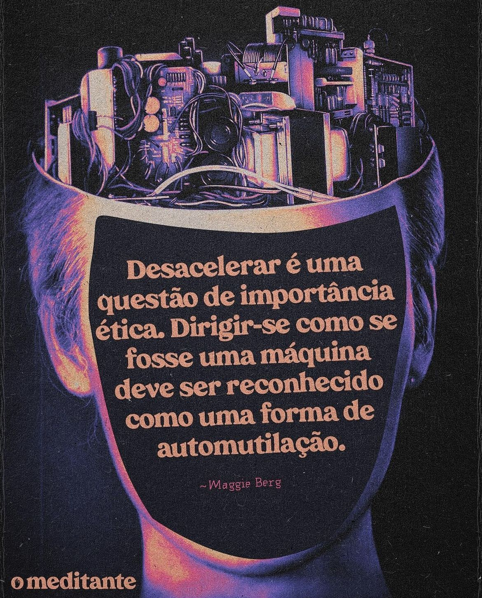
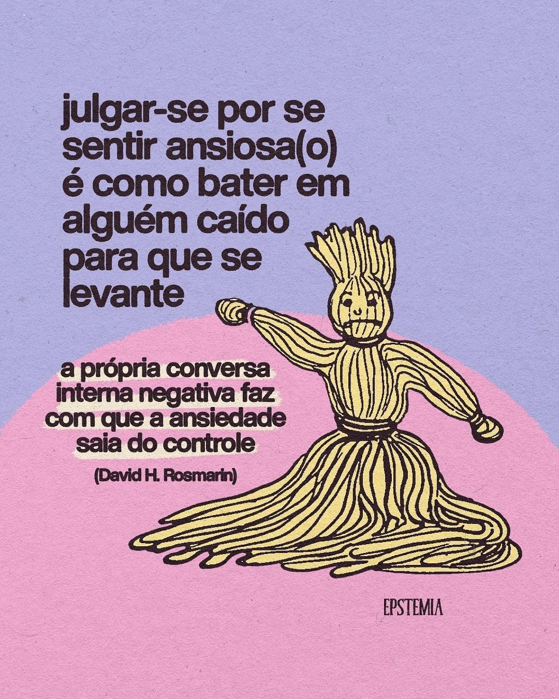
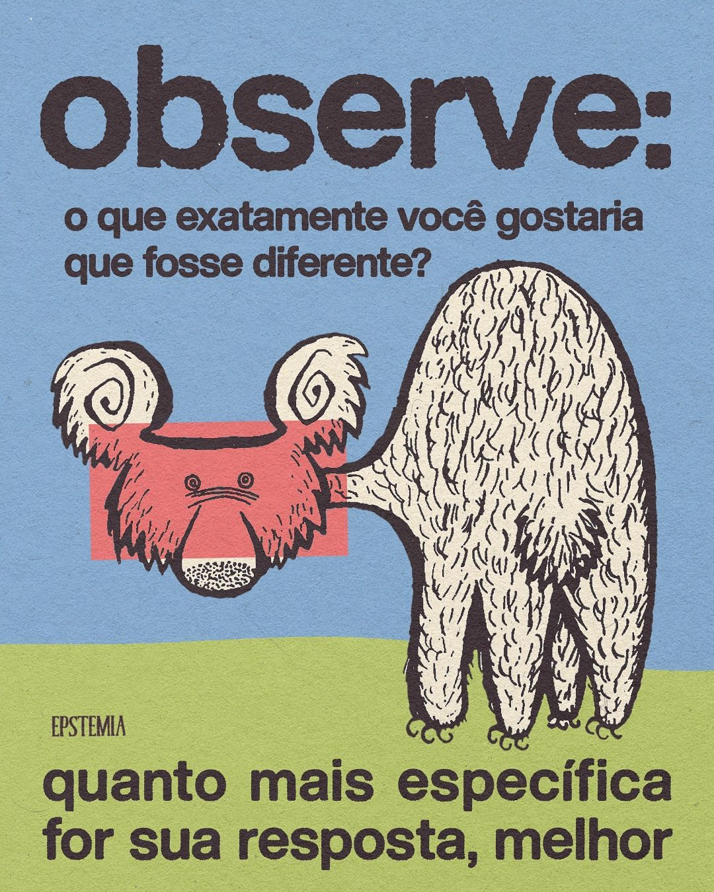
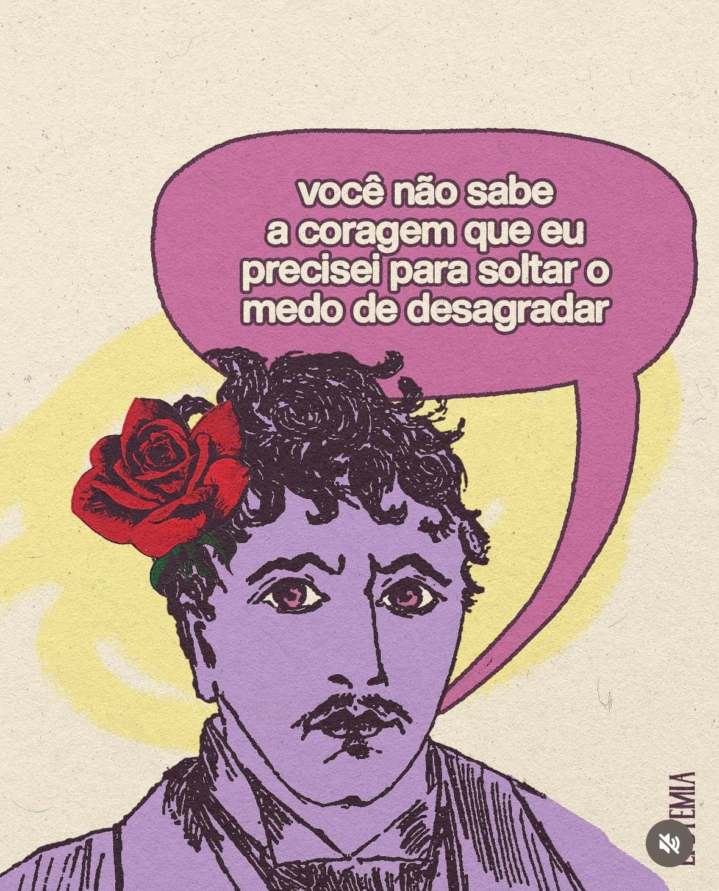

Mensagens Inspiracionais
Reflexões poderosas para sua jornada de autocuidado

"Desacelerar é uma questão de importância ética. Dirigir-se como se fosse uma máquina deve ser reconhecido como uma forma de automutilação." - Maggie Berg

"Julgar-se por se sentir ansioso(a) é como bater em alguém caído para que se levante."

"Você não precisa ficar desconfortável para deixar todo mundo confortável."

"Observe: o que exatamente você gostaria que fosse diferente? Quanto mais específica for sua resposta, melhor."

"Você não sabe a coragem que eu precisei para soltar o medo de desagradar."